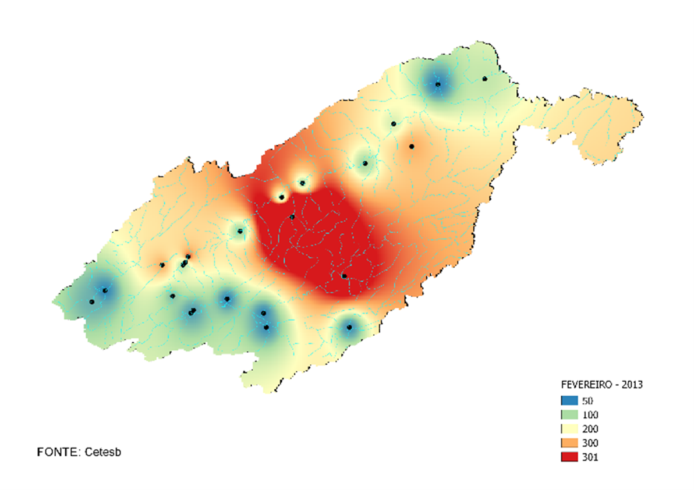
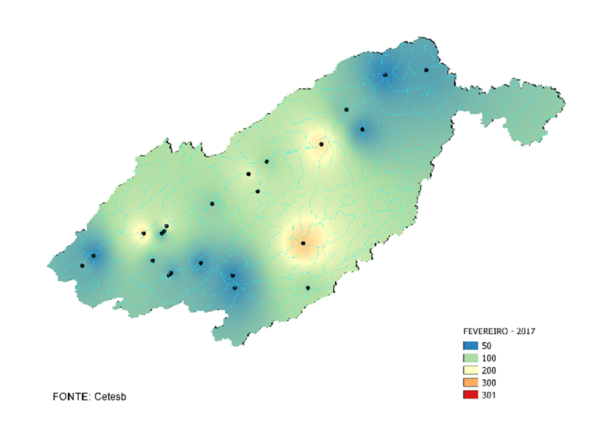

GEOPROCESSAMENTO · FATEC JACAREÍ
Análise espaço-temporal de turbidez da Bacia do Rio Paraíba do Sul
Trabalho de graduação dedicado à análise da qualidade da água da Bacia do Rio Paraíba do Sul, a partir do indicador de turbidez.
A pesquisa analisou o comportamento espacial e temporal do indicador entre 2013 e 2017, relacionando os resultados ao Índice de Qualidade das Águas (IQA) e aos padrões de referência do CONAMA.

